第一部分：红黑树表示与旋转
红黑树是一种平衡二叉树，其性质不再赘述。
红黑树的数据结构如下：
1
2
3
4
5
6
7
8
9
10
11
12
13
14
15
16
17
18
19
20
21
22
23
24
|
struct RB_node
{
RB_node *left; //左孩子
RB_node *right; //右孩子
RB_node *parent; //父节点
int color; //结点的颜色
int key;
RB_node(RB_node* init,int c_init,int num):left(init),right(init),parent(init),color(c_init),key(num){}
};
struct RB_tree
{
RB_tree *root;
RB_tree *nil;
RB_tree()
{
nil=new RB_node(NULL,BLACK,INFINITY); //树的哨兵必然为黑色
root=nil;
}
};
|
值得特别说明的是，这里的T->nil表示的是哨兵结点，是为了方便之后的运算。
红黑树的旋转过程，如下图所示：
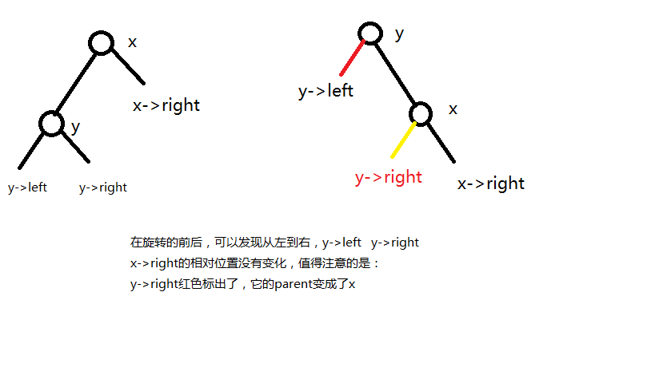
注意旋转的前后，从左到右，子树依次是y->left y->right x->right，但是y->right的parent变成了x了！
红黑树旋转的过程如下给出：
1
2
3
4
5
6
7
8
9
10
11
12
13
14
15
16
17
18
19
20
21
22
23
24
25
26
27
28
29
30
31
32
33
34
35
36
37
38
39
40
41
42
43
44
45
46
47
48
49
50
51
52
53
54
55
|
void left_rotate(RB_tree *T,RB_node *x)
{
RB_node *y=x->right; //左孩子结点
x->right=y->left;
//这一部处理的是加在x，y之间的“内结点”，y->left原先
//夹在x->left和y->right之间，旋转之后子树的相对顺序不变，最外边的结点是
//x->left和y->right，注意是围绕x和y进行的旋转，所以子树的相对位置保持不变
if(y!=NULL && y->left!=NULL)
y->left->parent=x;
//旋转之后需要重新更新parent结点信息
y->parent=x->parent; //这个时候y作为子树的根了，y要连到祖先中！
if(x->parent==NULL)
T->root=y;
else if(x->parent->left==x)
x->parent->left=y;
else
x->parent->right=y;
//保证x与祖先结点相连接
//最后处理x和y的关系
y->left=x;
x->parent=y;
}
//右旋，对称的代码
void right_rotate(RB_tree *T,RB_node *x)
{
//只需要把上述代码的相对位置，right和left互换就可以了
RB_node *y=x->left;
x->left=y->right;
if(y!=NULL && y->right!=NULL)
y->right->parent=x;
//旋转之后需要重新更新parent结点信息
y->parent=x->parent;
if(x->parent==NULL)
T->root=y;
else if(x->parent->left==x)
x->parent->left=y;
else
x->parent->right=y;
//保证x与祖先结点相连接
//最后处理x和y的关系
y->right=x;
x->parent=y;
}
|
红黑树的旋转左旋和右旋是对称的。
第二部分：红黑树的插入和性质的维护
具体程序：
1
2
3
4
5
6
7
8
9
10
11
12
13
14
15
16
17
18
19
20
21
22
23
24
25
26
27
28
29
30
31
32
33
34
35
36
37
38
39
40
41
42
43
44
45
46
47
48
49
50
51
52
53
54
55
56
57
58
59
60
61
62
63
64
65
66
67
68
69
70
71
72
73
74
75
76
77
78
79
80
81
82
83
84
85
86
|
void RB_insert_fixup(RB_tree *T, RB_node *z);
void RB_insert(RB_tree *T, RB_node *z)
{
RB_node *y=NULL;
//y作为遍历指针的双亲
RB_node *x=T->root;
while(x!=NULL)
{
y=x;
if(z->key<x->key)
x->x->left;
else x=x->right;
}
z->parent=y;
//y作为遍历指针x的母结点，x遍历寻找合适的插入位置
if(y==NULL)
T->root=z;
else if(z->key<y->key)
y->left=z;
else y->right=z;
z->left=NULL;
z->right=NULL;
z->parent=RED;
RB_insert_fixup(T,z); //最后插入的结点是红色的，与此同时进行红黑树性质的调整
}
void RB_insert_fixup(RB_tree *T,RB_node *z)
{
while(z->parent->color==RED)
{
if(z->parent==z->parent->parent->left)
{
RB_node *y=z->parent->parent->right; //设置叔结点
if(y->color==RED)
{
z->parent->color=BLACK; //父节点的黑色可以下放给两个结点
y->color=BLACK;
z->parent->parent->color=RED;
z=z->parent->parent; //z沿树上升
}
else
{
if(z==z->parent->right) //内结点先旋转成外节点
{
z=z->parent;
left_rotate(T,z);
}
z->parent->color=BLACK; //改变颜色之后，z的兄弟结点和z颜色相同
z->parent->parent->color=RED; //红黑树局部恢复平衡
right_rotate(T,z->parent->parent); //这个技巧是：改变颜色之后，然后旋转，这样不破坏红黑树性质
} //与此同时，结点沿树上升
}
else
{
RB_node *y=z->parent->parent->left;
if(y->color==RED)
{
z->parent->color=BLACK;
y->color=BLACK;
z->parent->parent->color=RED;
z=z->parent->parent;
}
else
{
if(z==z->parent->left)
{
z=z->parent;
right_rotate(T,z);
}
z->parent->color=BLACK;
z->parent->parent->color=RED;
left_rotate(T,z->parent->parent);
}
}
}
T->root->color=BLACK;
}
|
实现过程说明：
红黑树的插入是比较容易理解的，下面着重来讨论红黑树插入的调整：
情形一：
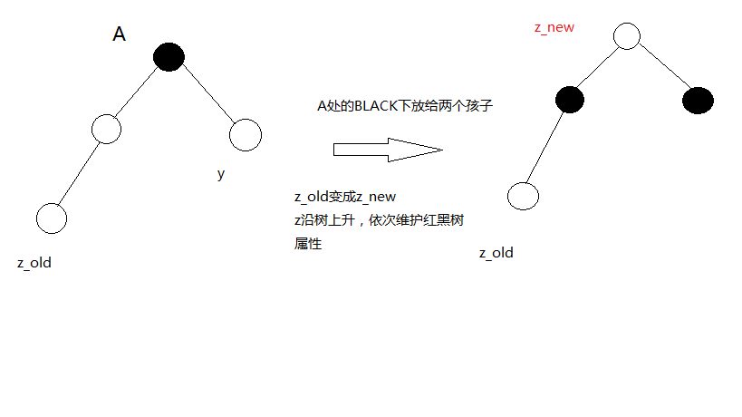
这个时候只要把根部A这个点的黑色，下放给两个孩子结点，这样红黑树的性质得到保持，这个时候刚插入的节点沿树上升就可以了。
情形二：
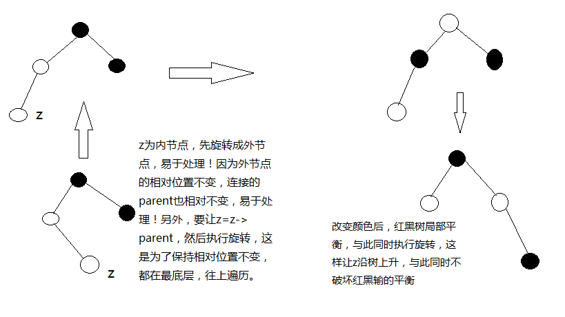
如果z是内节点，要首先旋转成外结点，因为外节点的相对位置是不变的，内节点在旋转的过程中还会更换parent！所以用外节点处理方便，值得注意的是，在旋转过程中，z的相对高度要保持不变，所以要执行z=z->parent，然后再旋转！这样沿树上升的时候，保证所有的结点都得到处理！
最后一步改变颜色，做到了红黑树的局部平衡，这个时候改变颜色之后再执行旋转，不破坏红黑树的平衡性，与此同时，z结点沿树上升，这样局部平衡得到保持。最后只要树根置为black就可以了。
第三部分：红黑树的删除
红黑树删除的代码和普通二叉树的删除没有多少区别，主要是要关注：
删除一个结点之后，记得寻找这个结点的后继，后继不一定是right，而是min(x->right)
1
2
3
4
5
6
7
8
9
10
11
12
13
14
15
16
17
18
19
20
21
22
23
24
25
26
27
28
29
30
31
32
33
34
35
36
37
38
39
40
41
42
43
44
45
46
47
48
49
50
51
52
53
54
55
56
57
58
59
60
61
62
63
64
65
66
67
68
69
70
71
72
73
74
75
76
77
78
79
80
81
82
83
84
85
86
87
88
89
90
91
92
93
94
95
96
97
98
99
100
101
102
103
104
105
106
107
108
109
110
111
112
113
114
115
116
117
118
119
120
121
122
123
124
125
126
127
128
129
130
131
132
133
134
135
136
137
138
139
140
141
142
|
//删除调整，这个时候x有两重黑色
void RB_delete_fixup(RB_tree *T, RB_node *x)
{
RB_node *w=NULL;
while (x!=T->root && x->color==BLACK)
{
if(x==x->parent->left)
{
w=x->parent->right; //w为x的兄弟结点
if(w->color==RED)
{
w->color=BLACK; //将这种情况划归为下面一种情况
w->parent->color=RED;
left_rotate(T,x->parent);
w=x->parent->right;
}
if(w->left->color==BLACK && w->right->color==BLACK)
{
W->color=RED;
x=x->parent; //x和w的黑色沿树上升，注意到x有双重黑色，所以x的颜色不变
} //变得是w，x->parent的颜色
else
{
if(w->right->color==BLACK)
{
w->left->color=BLACK;
w->color=RED; //同样，内节点变为外节点
right_rotate(T,w);
w=x->parent-?right;
}
w->color=x->parent->color; //这里x->parent的颜色不确定，但是w的颜色是黑色
//x有双重黑色，通过改变颜色加上旋转，可以将双重黑色表现在图中，这样完成了红黑树的局部平衡
x->parent->color=BLACK;
w->right->color=BLACK;
left_rotate(T,x->parent);
//红黑树局部平衡了
x=T->root;
}
}
else
{
w=x->parent->left;
if(w->color==RED)
{
w->color=BLACK;
x->parent->color=RED;
right_rotate(T,x->parent);
w=x->parent->left;
}
}
if(w->left->color==BLACK && w->right->color==BLACK)
{
w->color=RED;
x=x->parent;
}
else
{
if(w->left->color==BLACK)
{
w->right->color=BLACK;
W->color=RED;
left_rotate(T,w);
w=x->parent->left;
}
w->color=x->parent->color;
x->parent->color=BLACK;
w->left->color=BLACK;
right_rotate(T,x->parent);
x=T->root;
}
}
x->color=BLACK;
}
void transplant(RB_tree *T, RB_node *u, RB_node *v)
{
if(u->parent==T->nil)
T->root=v;
else if(u==u->parent->left)
u->parent->left=v;
else u->parent->right=v;
if(v!=NULL)
v->parent=u->parent;
}
RB_node *tree_minimum(RB_tree *T,RB_node *x)
{
while (x->left!=NULL) {
x=x->left;
}
return x;
}
void RB_delete(RB_tree *T, RB_node *z)
{
RB_node *y=z, *x;
int y_original_color=y->color;
if(z->left==NULL)
{
x=z->right;
transplant(T,z,z->right);
}
else if(z->right==NULL)
{
x=z->left;
transplant(T,z,z->left);
}
else
{
y=tree_minimum(T,z->right); //这里是查找z的后继，为y，用y来代替z的位置
y_original_color=y->color;
x=y->right;
if(y->parent==z)
{
x->parent=y;
}
else
{
transplant(T,y,y->right);
y->right=z->right;
y->right->parent=y;
}
transplant(T,z,y);
y->left=z->left;
y->left->parent=y;
y->color=z->color;
}
if(y_original_color==BLACK)
RB_delete_fixup(T,x); //x为y的孩子结点，y的删除会影响x的相关性质
}
|
具体来看红黑树删除的调整：
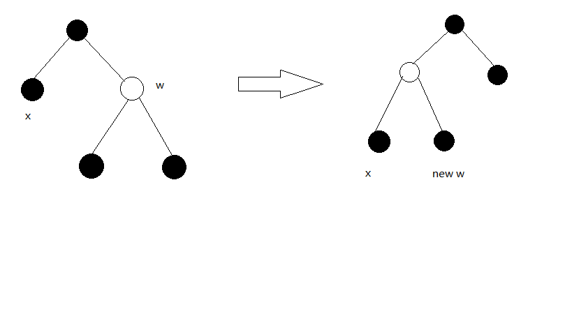
情形一
这个时候x的兄弟节点w是red，一个红节点必然跟着两个黑节点，这个时候改变颜色，并且执行旋转，可以将这种情况划归为第二种情况，就是x和w都是黑色。为什么要这么做？主要的原因是x有双重黑色，我们需要让x的黑色沿树上升，w的黑色也沿树上升，w为白色，要想办法让它变成黑色。改变颜色+旋转是常用的方法。
情形二
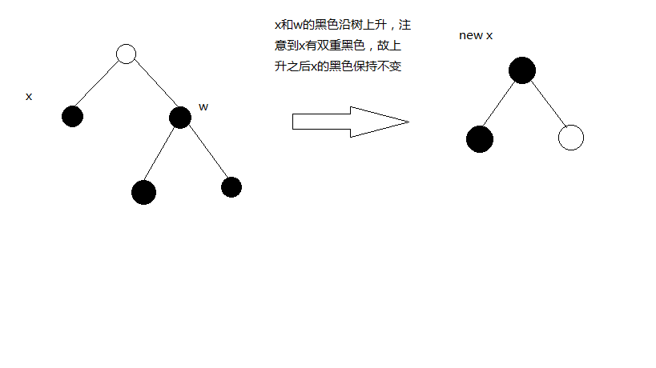
这个时候需要让x和w的黑色都沿树上升。注意到这个时候x有双重黑色，所以x的黑色不改变。
情形三
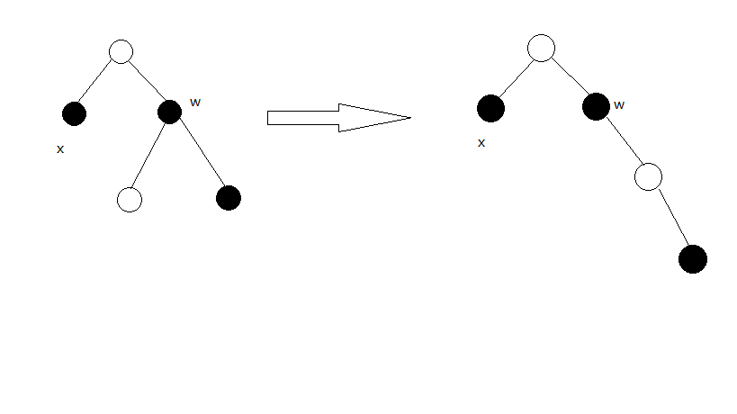
这个时候和插入调整一样，内节点要转化成外节点。
值得注意的是，这个时候w->left的颜色一定是red，因为不是的话就变成了第二种情况啦！
这个时候红色的结点是内结点，要将它旋转成外节点处理，理由在插入调整的过程中已经说了很清楚了。
情形四
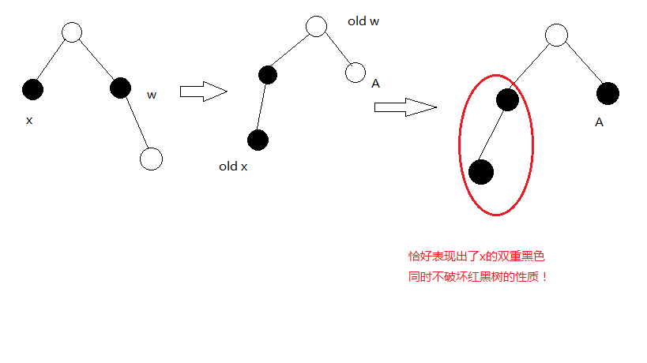
这个时候要注意的是：x->parent的颜色没有确定下来，但是w的颜色一定是black。
交换颜色的代码是：
1
2
3
| w->color=x->parent->color;
x->parent->color=BLACK;
w->right->color=BLACK;
|
如图所示，改变颜色+完成旋转之后，x的双重黑色已经体现出来了。这个时候红黑树达到了局部平衡。
所以将x置为根节点，确定颜色就可以了。
第四部分：算法导论课后习题解答
13.1红黑树的性质
13.1-1
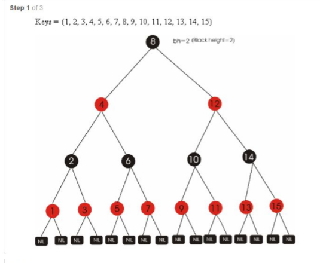
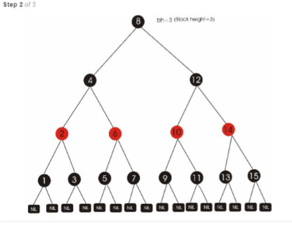
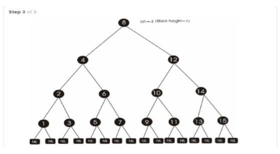
13.1-2
1、不行，违反性质4
2、不行，违反性质5
13.1-3
是，我们在调整过程中就是利用松弛红黑树的性质，最后将T->root-color置为black。
13.1-4
红黑树的黑高为从该点开始，所含有的黑节点的个数，所以红黑树的黑高保持不变。
可能的度为：
2 这个时候它的两个子节点原来都是黑色
3 这个时候一个子节点为红色，另一个为黑色，红色子节点又跟随两个黑色子节点，度为3
4 两个子节点都是红色
13.1-5
rh(x)≤bh(x)
h(x)=rh(x)+bh(x)≤2bh(x)
其中，rh(x)表示红高，bh(x)表示黑高
所以最长的一条最多是最短一条的两倍
13.1-6
黑高为k，内部节点最少为：2k−1
最多为：
由13.1-5的结论，最长路径 ≤2k+1
最多节点为：22k+1−1
13.1-7
比值最小为0，结点全部为黑色。
比值最大为2：1
参见13.1-1图，一个black两个结点都是红的，每个红节点又有两个黑节点，红节点和黑节点的比值为：
4：2=2（内部节点，不算根节点）
13.2旋转
13.2-1
已写出
13.2-2
n个节点有n-1条边，所以可能有n-1种旋转
13.2-3
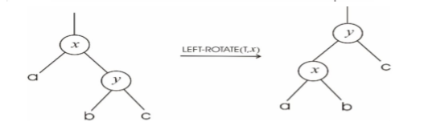
可以发现b的深度不变，a的深度增加，c的深度减少
13.2-4
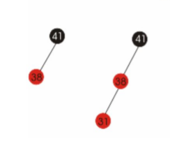
最坏的情况，仅有左子树，假设左子树有n个节点，可以看出左子树旋转成右子树需要n-1次。
这样左子树变成一条右侧伸展的链。
从左侧伸展的链旋转成为右侧伸展的链，最坏需要n-1的时间，其余任何一种情况，所需时间均少于
n-1
13.2-5
T1可以右转成T2，可知若有i个结点，需要旋转i-1条边
∑i=1ni=O(n2)
13.3插入
13.3-1
如果将z染色成黑色，很显然违反红黑树性质5，违反红黑树性质5，做调整的时候是针对高度来调整。
这个时候红黑树还必须满足一种高度平衡：就是任意路径，从root到nil，红黑树的黑高差恒等于0
在调整的时候比较麻烦。实际上这是属于类AVL树了。
高度平衡的二叉树，是AVL树，这是另外一种平衡二叉树。
13.3-2
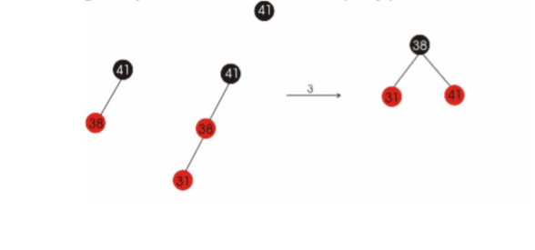
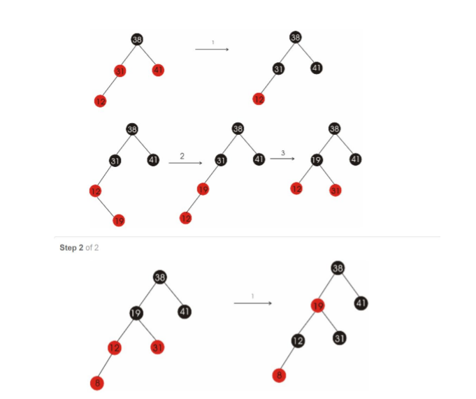
13.3-3
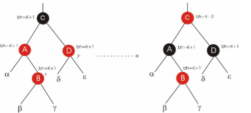
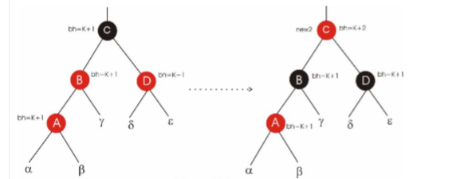
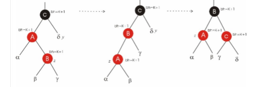
13.3-4
z为叶子节点，则z->parent为根节点。根节点的颜色肯定恒为黑色，这个时候退出循环while(z->parent->color==RED)
那么也就遍历不到z->parent->parent了。
13.3-5
插入的n-1个节点都为black，当插入第n个节点的时候，新插入的节点为红色，满足红黑树性质。
13.3-6
1
2
3
4
5
6
7
8
9
10
11
12
13
14
15
16
17
18
19
20
21
22
23
24
25
26
27
28
| RB_node *tree_search(RB_tree *T, RB_node *x, int k, RB_node *par, RB_node *p_par)
{
//人为定义一个tree_search函数，从根节点遍历，寻找x的parent和parent->parent
while(x!=T->nil && k!=x->key)
{
par=x;
if(k<x->key)
x=x->left;
else x=x->right;
if(k!=x->key) //如果没有找到待查找的值，此时x=x->child
{ //记录下遍历前的x=p_par，遍历后的x=par，返回x，此时用par和p_par表示
p_par=par;
par=x;
}
}
return x；
}
void RB_insert_fixup(RB_tree *T, RB_node *z)
{
//相关代码
RB_node *par=T->nil, *p_par=T->nil;
tree_search(T,T->root,z->key,par,p_par);
//将原来的z->parent用par代替，z->parent->parent用p_par代替
}
|
13.4删除
13.4-1
在执行RB_delete_fixup之后，可以发现，x=root, x->color=BLACK，所以树根一定是黑色的
13.4-2
此时不进入循环，x->color=BLACK，恢复性质4
13.4-3
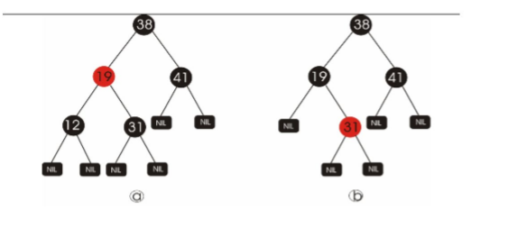
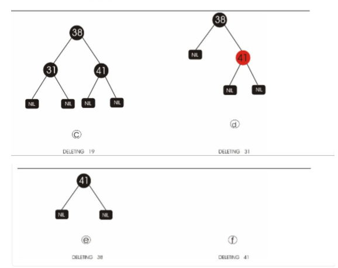
13.4-4
- 1、4、5行检查哨兵，因为被删除的节点没有孩子，所以检查T->nil的情况
- 左旋，右旋的时候，w的兄弟没有孩子，此时检查哨兵
13.4-5
检查在稿纸上进行
13.4-6
情况一，w的颜色为红色，所以x->parent的颜色一定是黑色
13.4-7
不一样
如下图
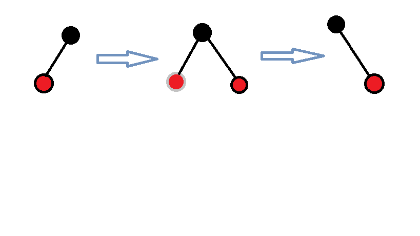
其中，灰色的节点代表刚刚插入又删除的节点。
 微信
微信 支付宝
支付宝